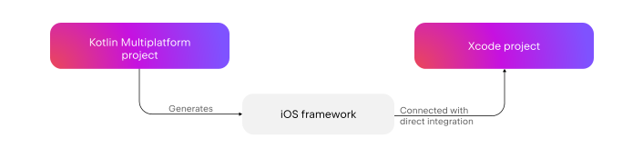
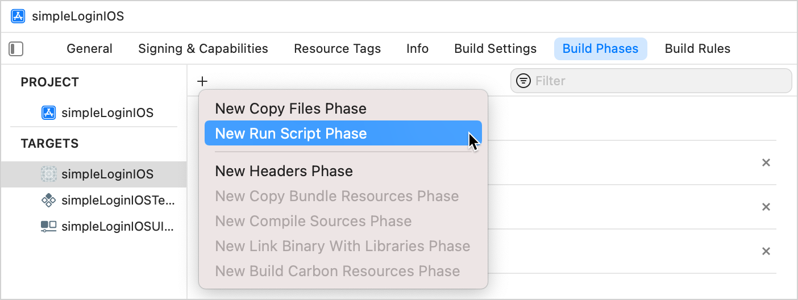
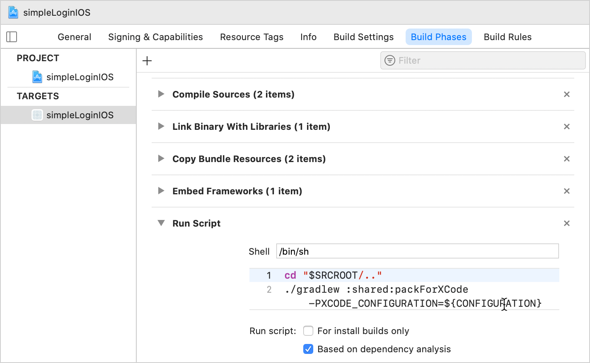
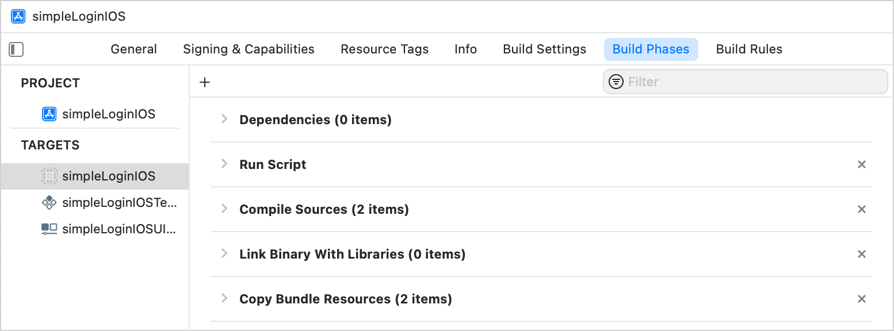
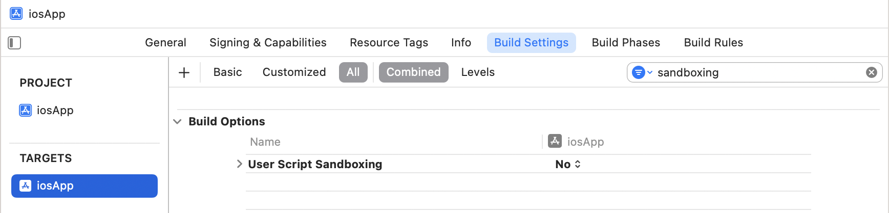

If you want to develop your Kotlin Multiplatform project and an iOS project simultaneously by sharing code between them, you can set up direct integration using a special script.
This script automates the process of connecting the Kotlin framework to iOS projects in Xcode:

The script uses the
embedAndSignAppleFrameworkForXcode
Gradle task designed specifically for the Xcode environment. During the setup, you add it to the run script phase of the iOS app build. After that, the Kotlin artifact is built and included in the derived data before running the iOS app build.
In general, the script:
Copies the compiled Kotlin framework into the correct directory within the iOS project structure.
Handles the code signing process of the embedded framework.
Ensures that code changes in the Kotlin framework are reflected in the iOS app in Xcode.
How to set up
If you're currently using the CocoaPods plugin to connect your Kotlin framework, migrate first.
Migrate from CocoaPods plugin to direct integration
To migrate from the CocoaPods plugin:
In Xcode, clean build directories using
Product
|
Clean Build Folder
or with the
Cmd + Shift + K
shortcut.
In the directory with the
Podfile
file, run the following command:
pod deintegrate
Remove the
cocoapods {}
block from your
build.gradle(.kts)
files.
Delete the
.podspec
and
Podfile
files.
Connect the framework to your project
To connect the Kotlin framework generated from the multiplatform project to your Xcode project:
The
embedAndSignAppleFrameworkForXcode
task only registers if the
binaries.framework
configuration option is declared. In your Kotlin Multiplatform project, check the iOS target declaration in the
build.gradle.kts
file.
In Xcode, open the iOS project settings by double-clicking the project name.
On the
Build Phases
tab of the project settings, click
+
and select
New Run Script Phase
.

Adjust the following script and copy the result to the run script phase:
cd "<Path to the root of the multiplatform project>"
./gradlew :<Shared module name>:embedAndSignAppleFrameworkForXcode
In the
cd
command, specify the path to the root of your Kotlin Multiplatform project, for example,
$SRCROOT/..
.
In the
./gradlew
command, specify the name of the shared module, for example,
:shared
or
:composeApp
.

Drag the
Run Script
phase before the
Compile Sources
phase.

On the
Build Settings
tab, disable the
User Script Sandboxing
option under
Build Options
:

Build the project in Xcode. If everything is set up correctly, the project will successfully build.